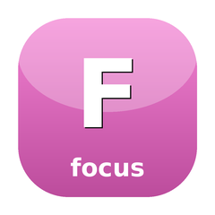

SugarFocus
Focus-ring state machine — ordered focusable regions with Tab/Shift-Tab traversal, accent paint gated on isEnabled()

A dependency-free focus ring for full-window terminal UIs: an ordered set of focusable regions with exactly one focused member and wrap-around Tab and Shift-Tab traversal. It answers "which panel has focus?" for a TUI layout. The ring carries no rendering and no key decoding, so it composes with any sugar-core model. It is an original SugarCraft design with no Go counterpart; see Upstream mapping.
Install
composer require sugarcraft/sugar-focusRequires PHP 8.3 or newer. The package has no runtime dependencies. The wiring example below uses sugar-core's key message, which your model already has.
Quickstart
use SugarCraft\Focus\FocusRing;
$ring = FocusRing::of('sidebar', 'grid', 'filter'); // 'sidebar' is focused
$ring = $ring->next(); // 'grid'
$ring = $ring->next(); // 'filter'
$ring = $ring->next(); // 'sidebar' (wraps)
$ring = $ring->previous(); // 'filter' (wraps the other way)
$ring = $ring->focus('grid'); // jump straight to a region
$ring->current(); // 'grid'
$ring->isFocused('grid'); // trueEvery mutator returns a new FocusRing. Store the result, because the receiver is never changed.
The recorded demo is a committed artifact. It is rendered from .vhs/focus-ring.tape by CI, not by hand. The demo repaints the whole frame on each loop, so it can flicker on some displays.

Concepts
A non-empty ring always has exactly one focused region. An empty ring focuses nothing: current() is null and index() is -1. Traversal wraps at both ends and skips disabled regions.
A region can be disabled without being removed. A disabled region stays registered, so it keeps its place in the order, but Tab skips it. Focus can legally sit on a disabled region, which the ring calls parked. The paint and the key routing must therefore check both isFocused() and isEnabled().
Every no-op returns the same instance. Registering an existing id, focusing an unknown or disabled id, and traversing with nowhere to go all return the receiver, so $new === $old detects "nothing changed" cheaply. When a caller needs to branch on that, canFocus() and tryFocus() answer explicitly.
Tasks
Use it for
- Tab cycling between panels. candy-code's
Tui\Panecycles its tabs through a ring. - Dashboard focus. SugarDashboard's
Layout\FocusManagerwraps a ring and persists it. - Modal dialogs. A dialog takes focus with
FocusTrapand gives it back on release.
Wire Tab and Shift-Tab into update()
use SugarCraft\Core\KeyType;
use SugarCraft\Core\Msg\KeyMsg;
if ($msg instanceof KeyMsg && $msg->type === KeyType::Tab
&& !$msg->ctrl && !$msg->alt) {
$ring = $msg->shift ? $this->ring->previous() : $this->ring->next();
return [$this->withRing($ring), null];
}On the wire, Shift+Tab arrives as Tab with shift set, because sugar-core decodes the ESC [ Z sequence into that shape. The guard leaves Ctrl+Tab and Ctrl+Shift+Tab free for other bindings, but only on terminals that report modifiers. On a legacy terminal Ctrl+Tab is byte-identical to Tab, so it moves the ring.
Paint the focused region
$style = $ring->isFocused('sidebar') && $ring->isEnabled('sidebar')
? $accentBorder
: $plainBorder;The isEnabled() conjunct matters. Without it, a parked focus paints an accent border on a dimmed panel. isParked() reports that whole-ring state in one call.
Trap focus in a dialog
FocusTrap owns the save-and-restore ritual. It holds the saved id and the list of background regions, so releasing the trap takes no argument.
$trap = $ring->trap()->guarding('dialog-ok', 'dialog-cancel'); // background unreachable
$trap = $trap->withRing($trap->ring()->next()); // Tab inside the dialog
$ring = $trap->release(); // background back, focus restoredrelease() re-enables the background, unregisters the dialog ids, and restores focus to the saved region when it is still enabled. Otherwise it restores focus to the first enabled region. guarding() throws when an id is already registered.
Save and restore focus
$json = json_encode($ring); // {"ids":[…],"focused":…,"index":n,"disabled":[…]}
$ring = FocusRing::fromJson($json)
?? FocusRing::of('sidebar', 'grid', 'filter'); // unreadable file: rebuild defaultsfromJson() returns null when the text does not parse to an array, so a corrupt file falls back to the defaults. A structurally broken id list still throws from restore(), because that is a producer bug and not disk rot.
Keys
The ring handles no keys itself. The runnable example maps these keys to ring operations, and a model can use the same map.
| Key | Ring operation |
|---|---|
| Tab | next() |
| Shift-Tab | previous() |
| x | Toggle whether the focused region takes part in traversal (disable() and enable()) |
| d | Re-enable the first disabled region, focus not required |
| s / r | Snapshot the ring with json_encode(), then restore it with fromJson() |
| q | Quit |
Theme and styling
The ring has no colors. The consumer paints the focused region with an accent border in view(), and the paint must follow isFocused() && isEnabled(). Pair the accent with a non-color cue, because a border is invisible to a user who cannot tell the hue apart. The example prints a text status per panel (> FOCUS, > parked, idle, off) and a footer that names the focused region. This follows WCAG 1.4.1 (Use of Color). Border strength falls under 1.4.11 (Non-text Contrast).
Screen readers never see the paint. Announce current() by name whenever it changes. For a "region k of n" position, use enabledIndex() + 1 over enabledCount(), because it counts what Tab can reach. When enabledIndex() is null, announce the region name alone.
Configuration
The ring has no runtime options. Its behavior is set by the constructor you choose and by the snapshot you restore.
| Entry point | Duplicate ids | Focus on build | Use when |
|---|---|---|---|
FocusRing::new() | n/a | Empty ring, no focus | Regions are registered later with register() |
FocusRing::of(...$ids) | Dropped; first wins | First id | The usual case: known regions at startup |
FocusRing::ofStrict(...$ids) | Throws InvalidArgumentException | First id | A duplicate id is a programmer error that should fail loudly |
FocusRing::fromJson($json) | Per restore() | From the snapshot's focused id | Restoring a file that may be corrupt; returns null when unreadable |
FocusRing::restore(array $snapshot) | Structurally broken ids throw | From focused, else the clamped index | A snapshot already decoded to an array |
The snapshot holds four keys: ids in traversal order, focused by id, index for readers of older snapshots, and disabled as a list of strings. Legacy positional-only snapshots have no disabled key, so every region comes back enabled. Ids in disabled must be JSON strings, because a numeric 1 never matches the id "1".
Examples
examples/focus-ring.php draws four labeled panels and handles the keys listed above. The example hand-rolls its ANSI, so the library stays dependency-free. With no terminal attached, it draws one frame and exits 0.
php examples/focus-ring.phpTesting
cd sugar-focus && composer install && vendor/bin/phpunitThe suite has two test classes: FocusRingTest covers the ring's transitions, disabled-region rules and snapshots, and FocusTrapTest covers the dialog recipe.
Troubleshooting and FAQ
A disabled panel shows the accent border
Focus can park on a disabled region. Paint with isFocused($id) && isEnabled($id), or check isParked() once for the whole ring.
next() does nothing
Traversal needs at least two enabled regions. With one enabled region the ring has nowhere to move, so the call returns the receiver unchanged. The exception is focus parked on a disabled region, which moves to the nearest enabled one.
current() is null
The ring is empty, or a dialog opened over an empty ring. focusFirst() does nothing on an empty ring, so register a region before focus can land: register() focuses the new region when the ring is empty, and of() takes the ids up front. Use focusFirst() only when regions exist and none is focused, and never pass null to focus().
Ctrl+Tab moves focus like Tab
That is a terminal limit, not a ring bug. Ctrl+Tab is identical to Tab on terminals that do not report modifiers. The guard can only tell the two apart where the terminal reports them.
A restored id contains terminal control bytes
A snapshot is untrusted input, and the ring never sanitizes ids. Pass every id you paint through sugar-core's Sanitize::untrusted(). Use untrustedForMarkedFrames() when the frame carries sugar-mouse zones.
use SugarCraft\Core\Util\Sanitize;
$label = Sanitize::untrusted((string) $ring->current());Upstream mapping
No Charmbracelet source maps to this library. The ring is an original SugarCraft design. By analogy, the Charmbracelet component stack handles focus inside each component, while this library holds focus state for a whole layout. The analogy is for orientation only.
| Class | Origin |
|---|---|
FocusRing | Original SugarCraft design |
FocusTrap | Original SugarCraft design, built on FocusRing |
examples/focus-ring.php | Hand-rolled ANSI demo of the ring; no upstream |
Architecture
FocusRing is an immutable value object. It holds an ordered id list, a focused id and a set of disabled ids, and it implements Countable, IteratorAggregate and JsonSerializable. FocusTrap wraps a ring and records the saved focus and the background regions it disabled. Neither class performs IO or rendering.
API
FocusRing
| Method | Description |
|---|---|
new(), of(...$ids), ofStrict(...$ids) | Empty ring, ring with the first id focused, or the same with duplicates rejected |
restore(array $snapshot), fromJson(string $json): ?self | Rebuild from a decoded snapshot, or from JSON text (null when unreadable) |
register(string $id), unregister(string $id), reorder(...$ids) | Add an enabled region, remove one while keeping focus where possible, or replace the order |
focus(string $id), focusFirst(), focusLast() | Focus a registered, enabled region, or the first or last enabled region |
canFocus(string $id): bool, tryFocus(string $id): ?self | Ask first: would focus() move? tryFocus() returns the moved ring or null |
next(), previous() | Tab and Shift-Tab traversal, wrapping and skipping disabled regions |
nextOf(string $id), previousOf(string $id), peekNext(), peekPrevious() | Pure queries: where traversal would land, without moving focus |
disable(string $id), enable(string $id) | Exclude a region from traversal, or restore it |
isEnabled(string $id), has(string $id), isFocused(string $id) | Enabled and registered checks, and the focus check to pair with isEnabled() when painting |
current(): ?string, isParked(): bool | The focused id, or null; whether focus sits on a disabled region |
index(): int, enabledIndex(): ?int | Position among all registered ids, or the 0-based ordinal among enabled ids |
ids(), enabledIds(), disabledIds() | Registered, enabled and disabled ids in traversal order |
count(), enabledCount(), disabledCount(), isEmpty() | Region counts and the empty check |
jsonSerialize(): array, getIterator() | The snapshot shape, and foreach support over every registered id |
FocusTrap
| Method | Description |
|---|---|
new(FocusRing $base), FocusRing::trap() | Start a trap over a ring |
guarding(...$ids) | Register the dialog ids and disable the background |
withRing(FocusRing $ring), ring() | Replace the working ring, or read it |
saved(), background(), dialog() | The focus to restore, and the background and dialog id lists |
release() | Return the ring with the background enabled, the dialog removed and focus restored |
Changelog and versioning
This page does not record a release history. The commit history on GitHub is the change record.